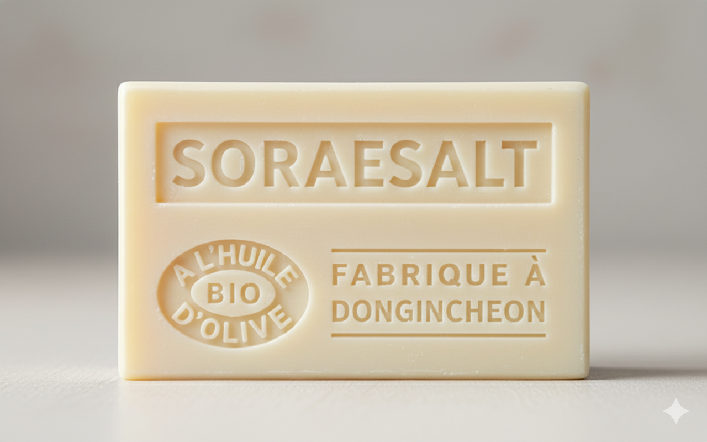

SALT SOAP
SORAESALT
SOLAR SALT FROM SORAE TIDELAND
수도권 마지막 갯벌이자 천일염 산업의 발원지였던 소래염전에서 영감을 받은 소금 비누입니다.
한때 전국 생산량의 대부분을 책임졌던 소래의 천일염처럼, 이 비누는 단단하면서도 부드러운 거품을 선사합니다.
애경 비누공장이 사라지고, 과거 염창과 창고들이 하나둘 자취를 감춘 자리에서 PORT 1883는 다시 한 번 묻습니다.
“우리는 무엇을 남길 것인가?” SORAESALT는 주차장이 되어버린 공장 부지 대신,
욕실 한 켠에서 소래의 역사를 조용히 불러냅니다.